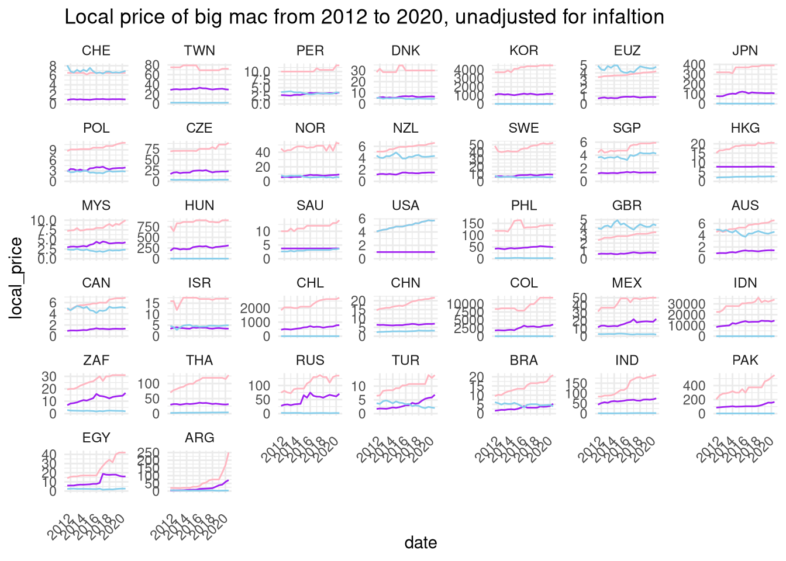
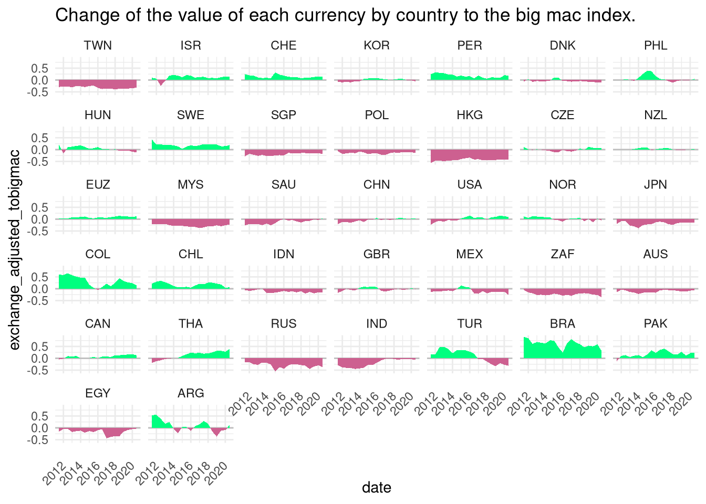

In this post, I will be diving into the big-mac data set from the tidy tuesday project. It has been a while since I’ve done one of these, so this post will be update through several day as I get through the entire analysis, so bare with me. This time, however, I will try to be more sophisticated code wise and interpretation wise as this data set represent a very interesting economical subject. the PPP: the Purchase Power Parity.
Well, the PPP is usually an index used to compare the purchase power of different nations, using a specific chart of goods that are necessary for the livelihood of people in both countries, these goods include food, rent, services, etc… To simplify this chart and make the comparison universal, what’s better than a big-mac to do the job. The folks from The Economist, the data provider, shared this graph as a contextualization to the entire big-mac index:
insert pic2.png here
library(tidyverse)## ── Attaching packages ─────────────────────────────────────── tidyverse 1.3.0 ──## ✓ ggplot2 3.3.2 ✓ purrr 0.3.4
## ✓ tibble 3.0.4 ✓ dplyr 1.0.2
## ✓ tidyr 1.1.2 ✓ stringr 1.4.0
## ✓ readr 1.4.0 ✓ forcats 0.5.0## ── Conflicts ────────────────────────────────────────── tidyverse_conflicts() ──
## x dplyr::filter() masks stats::filter()
## x dplyr::lag() masks stats::lag()library(heatwaveR)
library(widyr)
theme_set(theme_minimal())big_mac <- readr::read_csv('https://raw.githubusercontent.com/rfordatascience/tidytuesday/master/data/2020/2020-12-22/big-mac.csv')%>%
rename(country = "iso_a3") ##
## ── Column specification ────────────────────────────────────────────────────────
## cols(
## date = col_date(format = ""),
## iso_a3 = col_character(),
## currency_code = col_character(),
## name = col_character(),
## local_price = col_double(),
## dollar_ex = col_double(),
## dollar_price = col_double(),
## usd_raw = col_double(),
## eur_raw = col_double(),
## gbp_raw = col_double(),
## jpy_raw = col_double(),
## cny_raw = col_double(),
## gdp_dollar = col_double(),
## adj_price = col_double(),
## usd_adjusted = col_double(),
## eur_adjusted = col_double(),
## gbp_adjusted = col_double(),
## jpy_adjusted = col_double(),
## cny_adjusted = col_double()
## )big_mac %>%
summary()## date country currency_code name
## Min. :2000-04-01 Length:1386 Length:1386 Length:1386
## 1st Qu.:2007-06-01 Class :character Class :character Class :character
## Median :2013-07-01 Mode :character Mode :character Mode :character
## Mean :2012-07-27
## 3rd Qu.:2017-07-01
## Max. :2020-07-01
##
## local_price dollar_ex dollar_price usd_raw
## Min. : 1 Min. : 0.3 Min. :0.640 Min. :-0.77932
## 1st Qu.: 7 1st Qu.: 3.0 1st Qu.:2.335 1st Qu.:-0.44559
## Median : 24 Median : 7.8 Median :3.044 Median :-0.29087
## Mean : 10043 Mean : 3817.9 Mean :3.255 Mean :-0.23051
## 3rd Qu.: 119 3rd Qu.: 47.1 3rd Qu.:4.013 3rd Qu.:-0.06728
## Max. :4000000 Max. :1600500.0 Max. :8.312 Max. : 1.27307
##
## eur_raw gbp_raw jpy_raw cny_raw
## Min. :-0.80536 Min. :-0.8098 Min. :-0.72398 Min. :-0.56633
## 1st Qu.:-0.43715 1st Qu.:-0.4009 1st Qu.:-0.25537 1st Qu.: 0.04854
## Median :-0.27673 Median :-0.2335 Median :-0.00458 Median : 0.32810
## Mean :-0.23386 Mean :-0.1818 Mean : 0.03721 Mean : 0.48611
## 3rd Qu.:-0.07118 3rd Qu.: 0.0000 3rd Qu.: 0.23117 3rd Qu.: 0.81320
## Max. : 0.87063 Max. : 1.1358 Max. : 2.15980 Max. : 4.38623
##
## gdp_dollar adj_price usd_adjusted eur_adjusted
## Min. : 1050 Min. :2.328 Min. :-0.5780 Min. :-0.5830
## 1st Qu.: 7990 1st Qu.:2.943 1st Qu.:-0.1850 1st Qu.:-0.2222
## Median : 15214 Median :3.308 Median :-0.0320 Median :-0.0960
## Mean : 25983 Mean :3.708 Mean :-0.0198 Mean :-0.0863
## 3rd Qu.: 42221 3rd Qu.:4.415 3rd Qu.: 0.0968 3rd Qu.: 0.0220
## Max. :100579 Max. :7.434 Max. : 1.4850 Max. : 0.8230
## NA's :684 NA's :684 NA's :684 NA's :684
## gbp_adjusted jpy_adjusted cny_adjusted
## Min. :-0.5900 Min. :-0.4570 Min. :-0.5550
## 1st Qu.:-0.1350 1st Qu.: 0.0102 1st Qu.:-0.1338
## Median : 0.0000 Median : 0.1950 Median : 0.0210
## Mean : 0.0135 Mean : 0.2253 Mean : 0.0333
## 3rd Qu.: 0.1480 3rd Qu.: 0.3820 3rd Qu.: 0.1532
## Max. : 1.2860 Max. : 1.6210 Max. : 1.4050
## NA's :684 NA's :684 NA's :684First, I’d like to start working on a equal time intervals for all the countries. This will allow us to make comparison with each one during that periode when we aggregate and visualize the variables. We will simply drop the missing values. Later we can choose to do something different, like imputing the missing values with Knn.
big_mac %>%
drop_na() %>%
ggplot(aes(x = date,
y = local_price)) +
geom_line(color = "lightpink") +
#geom_line(aes(y = gdp_dollar), color = "skyblue") +
theme(axis.text.x = element_text(angle = 45, vjust = 0.5, hjust=1)) +
facet_wrap(~ country, scales = "free_y") +
labs(title = "Local price of big mac from 2012 to 2020, unadjusted for infaltion")A nice trick that I’ve seen in the latest David Robinson screencast was basically to organize the countries from the most changing price to the most stable ones, also in order to compare them we will need the lines to start form the same origin of the coordinate, most practically 0. let’s do that,
big_mac %>%
drop_na() %>%
mutate(country = fct_reorder(country, local_price, function(.) max(.) / min(.))) %>%
ggplot(aes(x = date,
y = local_price)) +
geom_line(color = "lightpink") +
expand_limits(y = 0) +
#geom_line(aes(y = gdp_dollar), color = "skyblue") +
theme(axis.text.x = element_text(angle = 45, vjust = 0.5, hjust=1)) +
facet_wrap(~ country, scales = "free_y") +
labs(title = "Local price of big mac from 2012 to 2020, unadjusted for infaltion")Now you can see both graphics, I guess the last one is much better, even though I am not 100% satisfied with the way they are stacked together.
Now, what about the actual price of the big mac at each period? How does the local prices compare to the actual price of the big mac? let’s find out :
big_mac %>%
drop_na() %>%
mutate(country = fct_reorder(country, local_price, function(.) max(.) / min(.))) %>%
ggplot(aes(x = date,
y = local_price)) +
geom_line(color = "lightpink") +
geom_line(aes(y = dollar_price), color = "skyblue") +
expand_limits(y = 0) +
theme(axis.text.x = element_text(angle = 45, vjust = 0.5, hjust=1)) +
facet_wrap(~ country, scales = "free_y") +
labs(title = "Local price vs dollar price of big mac from 2012 to 2020, unadjusted for infaltion")Only Chile, the UK, and the the Eurozone (in agregate) have local prices of the big mac cheaper than the dollar price between 2012 and 2020. This is interesting, but why is this the case? Does this have anything to do with the exchange rate? Let’s find out how the exchange rate change over time induce a change in the burger prices.
big_mac %>%
drop_na() %>%
mutate(country = fct_reorder(country, local_price, function(.) max(.) / min(.))) %>%
ggplot(aes(x = date,
y = local_price)) +
geom_line(color = "lightpink") +
expand_limits(y = 0) +
geom_line(aes(y = dollar_ex), color = "purple") +
geom_line(aes(y = dollar_price), color = "skyblue") +
theme(axis.text.x = element_text(angle = 45, vjust = 0.5, hjust=1)) +
facet_wrap(~ country, scales = "free_y") +
labs(title = "Local price of big mac from 2012 to 2020, unadjusted for infaltion")
Let’s get back to the local price, and see if we can figure something if we watch the variation from the adjusted price point:
big_mac %>%
drop_na() %>%
mutate(country = fct_reorder(country, local_price, function(.) max(.) / min(.))) %>%
ggplot(aes(x = date,
y = local_price)) +
geom_line(color = "lightpink") +
expand_limits(y = 0) +
geom_line(aes(y = adj_price), color = "purple") +
#geom_line(aes(y = dollar_price), color = "skyblue") +
theme(axis.text.x = element_text(angle = 45, vjust = 0.5, hjust=1)) +
facet_wrap(~ country, scales = "free_y") +
labs(title = "Local vs adjusted prices of the big mac", y = "price")Now, we should figure how the construct the big mac exchange rate, inflation rate, in order to compare how these nations are really doing burger wise :
big_mac %>%
drop_na() %>%
mutate(bm_ex = local_price / adj_price) %>%
mutate(country = fct_reorder(country, bm_ex, function(.) last(.) / first(.))) %>%
select(date, country, local_price, dollar_ex, dollar_price, adj_price, bm_ex) %>%
ggplot(aes(x = date, y = bm_ex)) +
geom_line(color = "skyblue") +
geom_line(aes(y = dollar_ex), color = "lightpink") +
facet_wrap(~ country, scales = "free_y")We can see that we got some difference between the dollar exchange rate and the big mac exchange index, and in order to know which currency is over valued or under valued with respect to the big mac exchange and the dollar exchange indexes. Then which country is which :
big_mac %>%
drop_na() %>%
mutate(bm_ex = local_price / adj_price) %>%
mutate(country = fct_reorder(country, bm_ex, function(.) last(.) / first(.))) %>%
select(date, country, local_price, dollar_ex, dollar_price, adj_price, bm_ex) %>%
mutate(exchange_adjusted_tobigmac = (bm_ex - dollar_ex) / dollar_ex) %>%
ggplot(aes(x = date, y = exchange_adjusted_tobigmac)) +
geom_line(color = "lightpink") +
geom_hline(aes(yintercept = 0), color = "gray") +
facet_wrap(~ country)This graph shows when a currency is actually over valued or under valued given the bigmac exchange index, we can make this clearer, if we fill the intercections with colors indicating the sense of the value.
big_mac %>%
drop_na() %>%
mutate(bm_ex = local_price / adj_price) %>%
mutate(country = fct_reorder(country, bm_ex, function(.) last(.) / first(.))) %>%
select(date, country, local_price, dollar_ex, dollar_price, adj_price, bm_ex) %>%
mutate(exchange_adjusted_tobigmac = (bm_ex - dollar_ex) / dollar_ex) %>%
ggplot(aes(x = date, y = exchange_adjusted_tobigmac)) +
geom_hline(aes(yintercept = 0), color = "gray") +
geom_flame(aes(x = date, y2 = exchange_adjusted_tobigmac, y = 0), fill = "hotpink3") +
geom_flame(aes(x = date, y = exchange_adjusted_tobigmac, y2 = 0), fill = "springgreen") +
labs(title = "Change of the value of each currency by country to the big mac index.") +
theme(axis.text.x = element_text(angle = 45, vjust = 0.5, hjust=1)) +
facet_wrap(~ country)